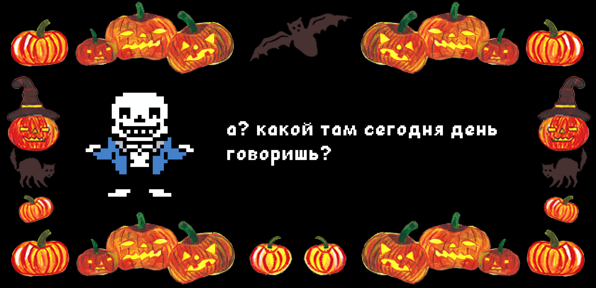
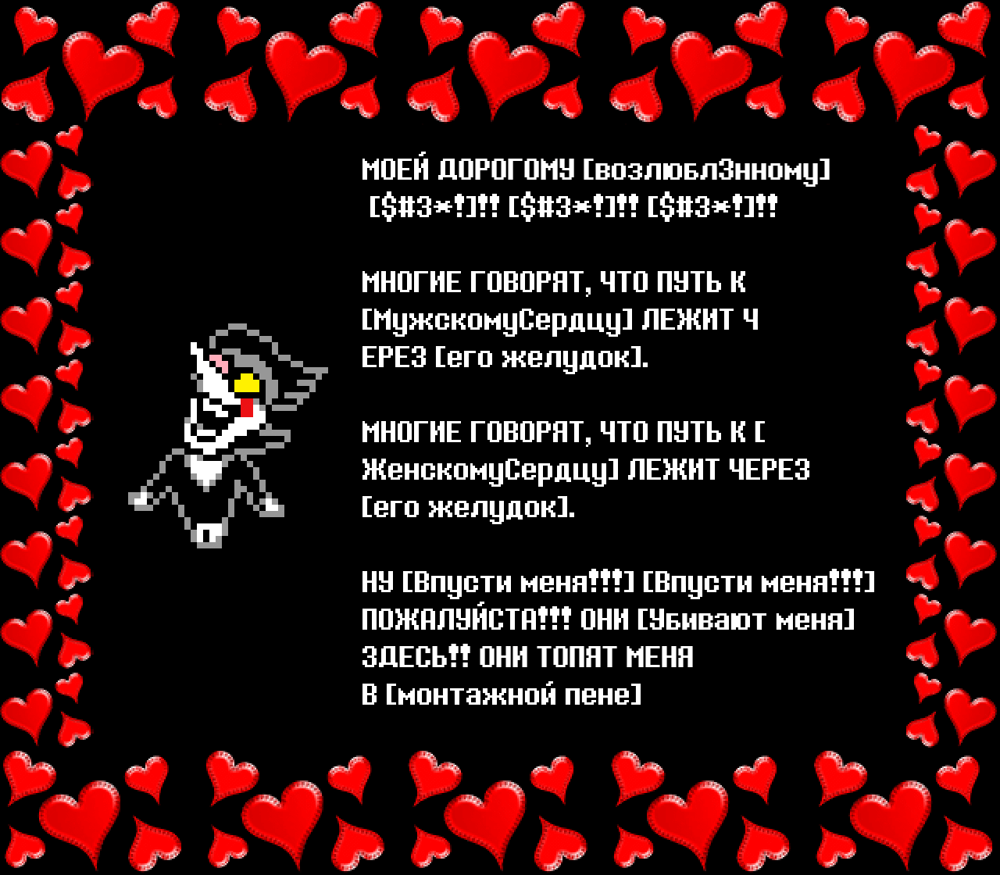
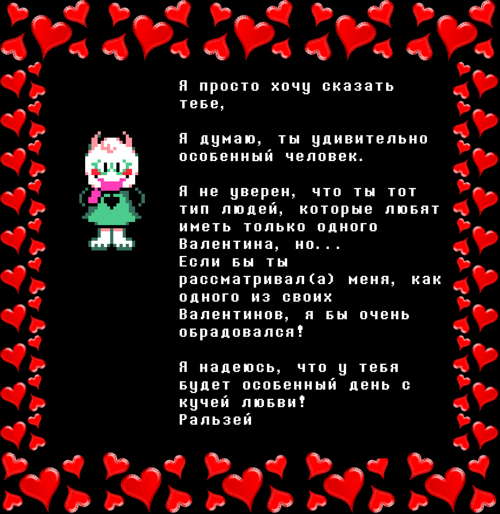
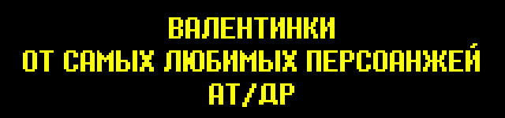
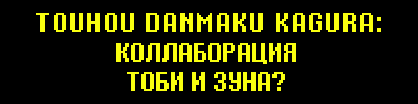

|
ЛЮБОВЬ. |
В этом мире нет ничего важнее. |
ЛЮБОВЬ. |
Это все сущее. |
И поэтому сегодня, мы в АНДЕРТЕЙЛ/ДЕЛЬТАРУН КОРП. решили сделать что-нибудь очень особенное для наших верных фанатов... |
ТЫ наша Валентинка!!! Пожалуйста, наслаждайся этими тремя открытками!!! |
 |
 |
 |
Что ты думаешь? Тебе понравились твои Валентинки? Что ж... позволь мне сказать тебе, что это была лишь малая часть того, что мы подготовили. Видишь ли, существует чуть меньше 50-ти разных открыток... |
Так что, обменивайся ими с друзьями, чтоб собрать их все!! |
… И не пытайся хитрить. |
|

![Spamton: [Dear mommy and daddy],
[I love you very much!]
I HAVE ATTACHED [Leaked military documents from the BlamThunder Forums] TO THE [love you very much]! IF YOU [ever want to see your son again] PLEASE [check out the enclosed instruction book]
LOVE-LETTER-FOR-YOU.TXT.vbs](valentines/06-spamton-3-n-LbXtgvThkyV7r1SU.gif)


 |
Как тебе Валентинки? Твоё сердце, наверное, буквально выпрыгивает от радости... и затем носится вокруг по какому-то зелёному ????. |
... Ну, по крайней мере, у некоторых из вас. Другим... возможно, понадобится немного больше убеждения, чтобы войти в Режим Любовной Лихорадки. (Смотрю на вас, не-подписчики Сумасшедшего Уровня...) |
В таком случае нам придётся представить наше секретное оружие. Супер-особое послание, прямо от твоего любимого персонажа... Маэстро любви, самого обнимабельного персонажа, того кто ни перед чем не остановится, чтобы надеть кольцо на палец и завоевать твоё сердце. |
Наслаждайся |
|

|
Счастливого 2024 года, все! Команда ДЕЛЬТАРУНА (и я) брали небольшой перерыв на праздники, чтобы навестить семьи, но теперь все вернулись и с нетерпением готовы дальше работать над игрой. |
Что касается Главы 3, мы работаем над японской локализацией. Затем начнём портирование и тестирование Главы на баги, после чего она будет… полностью завершена! |
Как я упоминал в прошлый раз, сейчас команда в основном сосредоточена на Главе 4, а также ведётся небольшая работа над Главой 5. Мы установили для себя внутренний дедлайн по Главе 4, и наш новый продюсер поможет нам провести все необходимые танцы с бубнами, чтобы уложиться в него. Я уверен, что этот год будет очень продуктивным годом!!! |
Как обычно, я не могу рассказать многого, чтобы ничего не заспойлерить. Так что просто посмотрите на эту чашку |
|


Saffronscarf сообщила мне, что год Кролика и год Дракона идут прямо друг за другом… Эй, это ведь немного романтично, не так ли!? Так что, она нарисовала кое-что. |
|
|
|


В этом выпуске мы провели особенное интервью с особенным другом… Гиги!!! |
Гиги помогает мне с концепт-артом ещё с времён АНДЕРТЕЙЛА. Они потрясающий художник с непревзойдённым чувством цвета и стиля… Самые заметные их работы, которые вы видели на данный момент это костюмы Криса и Сьюзи в Тёмном Мире, а также концепт-арты фонов для Главы 2. Но, они также внесли большой вклад в дизайн следующих глав, так что ждите с нетерпением! |
Ну а теперь — к интервью!!! |
|

Вы, возможно, слышали, что недавно я написал музыку для одной игры... |
Да, для очень определённой игры… да, с совершенно неожиданным сотрудничеством... |
Верно... |
 |
Я сотрудничал с Гиги над саундтреком для их новой визуальной новеллы SOUL OF SOVEREIGNTY!!! |
Первая глава уже доступна для покупки! Это линейный сюжет, который занимает всего час или два для прохождения, так что обязательно зацените!! |
Эта игра предназначена только для взрослой аудитории (18+). Не играйте в это, дети! |
|
Как я и намекнул, саундтрек был результатом совместной работы! Хотя каждый из нас делал свои независимые треки время от времени, большинство композиций были созданы нами двумя, перекидывающими проектные файлы туда-сюда. Честно говоря, это было как настоящая работа 50 на 50, или даже 60 на 40 в пользу Гиги. Гиги упомянули, что хотели чтобы саундтрек звучал как музыка для Плейстейшен, так что я... Ну, я просто отправил им все звуки, которые обычно использую, и мы просто дали волю воображению. В любом случае, я не думаю, что когда-либо работал над чем-то так туда-сюдамно, так что это было действительно весело!!! (К тому же, это дебют Гиги как композитора и я очень горжусь.) |
SoulSov имеет более серьёзную фэнтезийную атмосферу, чем ДЕЛЬТАРУН... Но мне кажется, что в чём-то привлекательность персонажей схожа. Как и в ДЕЛЬТАРУНЕ, персонажи и мир имеют долгую историю. Они то, о чём Гиги размышляют уже более 10 лет... И это сложно выразить словами, но это чувствуется. Уже после короткой встречи с Лоиком и Исмэ они кажутся старыми друзьями... и трудно перестать о них думать. Я уже хочу встретиться с ними снова. |
В общем, если вам интересна магическая, фэнтезийная история с лёгким налётом клоунессы, я не могу посоветовать ничего лучше. |
А, да, и не забудьте заценить САУНДТРЕК!!! |
|


Они реальны |
|
Слушай... Если бы ты был фриком я бы сказал тебе надеть Ториэль, себе на ноги но это было бы странно, так что я этого не скажу. Но вообще так мне особо нечего не остаётся говорить |

 |
Вы возможно уже слышали, но песня, над которой я работал вместе с создателем Тоухоу ЗУНом, уже вышла!!! |
Для меня это немного похоже на сбывшуюся мечту, так что обязательно послушайте!!! |
|
Темми также нарисовала обложку для этой песни! А ещё, как обычно, она сделала все спрайты для новостной рассылки. Спасибо, Темми. |
|


 |
Юдзуру Ханю, которого считают одним из лучших фигуристов всех времён, если не лучшим фигуристом всех времён… |
… выступает под МЕГАЛОВАНИЮ!!! |
|
Чтобы объяснить контекст: Юдзуру-сан сейчас ставит особое сольное ледовое шоу под названием "RE_PRAY", которое рассказывает историю, вдохновлённую его любимыми РПГ играми. В постановке используется много музыки из игр, которые он любит… (Включая Lufia 2, что невероятно меня порадовало.) Не буду слишком много спойлерить слишком много, но сюжет, похоже, был немного вдохновлён АНДЕРТЕЙЛОМ, что стало замечательным сюрпризом! |
Это само собой разумеется, но для меня огромная честь, что моя музыка используется в таком событии. К счастью, я смог присутствовать лично… Это было одно из лучших зрелищ, что я видел в жизни. Когда он повернулся к трибунам, я закричал и на секунду почувствовал себя Винни-Пухом. |
Не знаю, не слишком ли это банально чтоб об этом говорить, но перед его выступлением мы отправили ему цветы… |
|
Видя эту цветочную композицию, ты наполняешься решимостью. |
Я сообщу вам, если когда-нибудь появится возможность увидеть это выступление самим! |
|


|
Я уверен, что после этой замечательной рассылки ваше сердце теперь делает доки-доки, бан-бан, пико-пико и ещё несколько звуков, которые сможет правильно диагностировать только врач. Но есть ещё кое-что…! |
Темми нарисовала иллюстрацию для новогодней открытки 8-4! |
|
Мило, правда??? |
Надеюсь, у всех будет удачный 2024 год! Год Дракона! |
Увидимся! |
|


{kind=link}